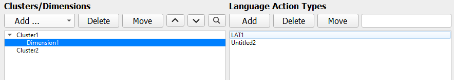
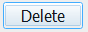

Add more specific rhetorical patterns to your dictionary with Language Action Types.
LATs are added under dimensions, which are under clusters.
You must have both a cluster with a dimension in order to add a LAT.
LATs are added separately from clusters and dimensions.
-
In the Clusters / Dimensions Window select the cluster,
then dimension that the LAT will be added to
-
In the Language Action Types Window, click
Add
A new LAT will be added with an "Untitled" Name property 
-
Add a name to the LAT in the LAT Properties Window below
and click Update
If you make a mistake, select the LAT and hit
Delete  to remove the desired LAT.